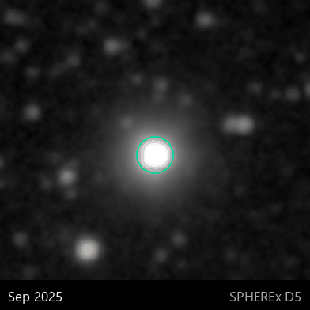
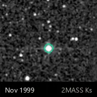

Genç yıldız (T Tauri türü) · K
RW Aurigae
Hâlâ tozla çevrili, parlaklığı öngörülemez biçimde değişen genç bir yıldız.

Hâlâ toza sarılı, yeni doğmuş bir yıldız. Hareket etmiyor ve görüntüler sabit kalıyor. Ama her rengin bir ziyareti gösterdiği tayfa bakın: bir yıl içinde yıldız 1,6 mikronun altında parlaklaştı, 4 mikronun ötesinde ise parlaklığının neredeyse yarısını yitirdi; çevresindeki yıldızlar değişmedi.
Neye bakmalı
Tayftaki renkler üç ziyareti gösterir ve birbirini keser. Eylül 2025’ten Eylül 2026’ya yıldız 1.6 mikronun altında %40’tan fazla parlaklaştı, 3.8 mikronun ötesinde ise parlaklığının neredeyse yarısını yitirdi; aynı görüntülerdeki sıradan yıldızlar yaklaşık %1 içinde sabit kaldı. 2014–2016’daki derin sönükleşmesinde gökbilimciler bunun tersini görmüştü: yıldızın yakınındaki sıcak toz onu gizlerken kızılötesinde ışıyordu.
SPHEREx’in bu noktaya ait 336 pozu var: 1 Eylül 2025 ile 16 Eylül 2026 arasında.
Chronosphere’de aç: RW Aurigae
Çeyrek yüzyıl boyunca

Kaynaklar: SPHEREx, NASA/JPL-Caltech, IRSA · SIMBAD · Gaia DR3 · 2MASS · WISE, NEOWISE · Wikipedia